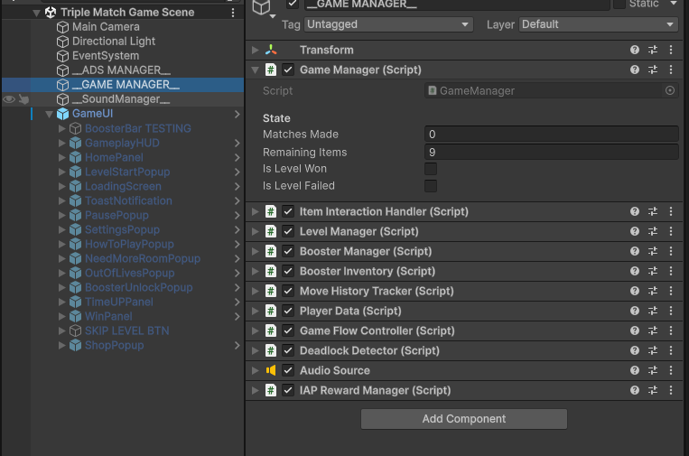
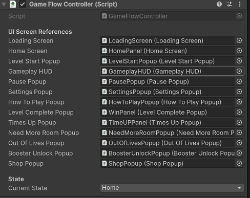
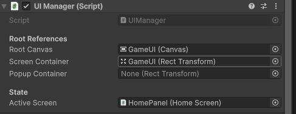

12. Game Flow & UI Architecture
Understand the state machine, GameFlowController, UIManager, popup transitions, guided tutorial steps, and camera fitter.
12.1 The basic flow
Loading > Home > Level Start > Gameplay
From Gameplay:
- Pause > Resume, restart, or return home.
- Complete all matches > Level Complete > Claim > Next Level or Home.
- Timer reaches zero > Time's Up > Continue or Give Up.
- No useful room/moves > Need More Room > Rescue, restart, or home.
- No lives before starting > Out of Lives > Wait, refill, or home.
12.2 Which objects control it?

| Component | Simple job |
|---|---|
| Game Flow Controller | Moves the player between screens and gameplay states. |
| Level Manager | Loads levels, manages progression, and runs the timer. |
| Game Manager | Tracks completed matches and remaining items. |
| UI Manager | Manages the screen and popup display. |
| Item Interaction Handler | Handles item input and dragging. |
| Deadlock Detector | Checks when the board needs a rescue option. |
| Player Data | Saves coins, lives, and recovery times. |
| Booster Manager / Inventory | Runs boosters and tracks their stock. |
12.3 Replace a screen or popup reference

-
01
Step 1
Duplicate the existing screen or popup prefab as your starting point.
-
01
Change its graphics and layout
Keep its required component and child references.
-
01
Step 1
Add the replacement to the scene's GameUI setup.
-
01
Step 1
Assign the replacement's matching component in Game Flow Controller.
-
01
Step 1
Remove or disable the old scene copy once references have been checked.
-
01
Step 1
Test every way of opening and closing it.
Keep one intended active version of each screen. Some components search for their references if fields are empty, so clear assignments make the setup easier to understand.

UI Manager connects the root canvas and screen/popup containers. Active Screen shows the current screen. It is not a sequence editor.
12.4 Connect another button to an existing action
For example, to add a second Settings button:
-
01
Add or duplicate a UI Button
-
01
Step 1
Select it and find Button > On Click().
-
01
Add an event with +
-
01
Step 1
Drag the scene object containing Game Flow Controller into the object field.
-
01
Step 1
Choose GameFlowController > OpenSettings().
-
01
Save the scene and test the button
Other existing no-argument actions include OpenShop(), OpenHowToPlay(), OpenPauseMenu(), ResumeGameplay(), RestartLevel(), and ReturnToHome(). Use the appropriate existing action for the button's purpose.
Many supplied popup buttons are already connected by their components when the game starts. An empty On Click list does not always mean a button is unconnected. Avoid adding a second call to a supplied button that already works.
12.5 Change popup behavior and timing
On a popup root, check Animate Transitions, Transition Duration, Close On Backdrop Click, and Close On Escape Key. Keep the background, close button, and content references connected.
Some gameplay popups force their close rules when opened. For example, Need More Room prevents dismissing the rescue decision through the backdrop or Escape. Test the running result after editing a close option.
These settings let you adjust the existing flow. A completely new game state or a new feature needs a separate implementation.
12.6 Edit a guided tutorial level
Open a level prefab that uses Tutorial Level Controller, or add that existing component to a suitable manual level. Use the level's own item and slot children for the references.
| Setting | What it does |
|---|---|
| Steps | Ordered list of guided moves. |
| Step Name | A label to help you recognize a step in the Inspector. |
| Source Item | The item allowed to move in that step. |
| Target Slot | Where the player must place it. |
| Fallback shelf / slot indexes | Alternative ways to find the source and target. Index 0 means the first entry. Direct references are easier for a first tutorial. |
| Require Match To Advance | Waits for a match instead of advancing as soon as the item lands. |
| Hint Text | Stores the step hint; display depends on the existing hint output. |
| Hand Pointer / Custom Hand Sprite | Uses the existing pointer or your replacement image. |
| Hand Offset | Moves the hand graphic relative to the guided positions. |
| Shift To Normal After Complete All Steps | Restores normal play after the last guided step. |
| Pause Timer During Tutorial | Pauses the timer while guidance is active. |
| Initial Delay | Wait before starting the first step. |
When you move or remove tutorial items, update the step references too. Test all steps from the beginning after editing the layout. Use the level prefab workflow in Sections 5-7; no additional screenshots are needed for this reference table.
12.7 Adjust how the level fits the camera
Select Main Camera and find Camera Grid Fitter. Top Padding World, Bottom Padding World, and Side Padding World reserve space around the shelves. Horizontal Pixel Margin adds a horizontal screen margin. Min Ortho Size and Max Ortho Size limit the camera's zoom range. Manual Center Offset shifts the fitted center. Smooth Transition and Transition Duration control the adjustment animation.
Use these settings when new shelf artwork or a larger grid needs more room. Test small and large levels, and leave room for the top HUD and bottom booster bar. The main scene screenshot in Section 1 shows where to find Main Camera.